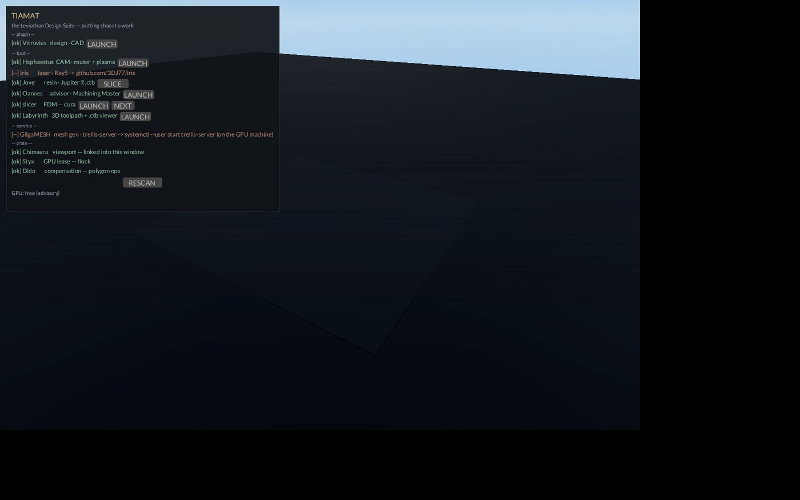

TIAMAT
The host. Every tool on one board — putting chaos to work.

Tiamat — Operator Manual
Host and launcher of the Leviathan Design Suite. Sovereign, local-first, no web tech. Licensed PolyForm Small Business (see LICENSE.md).
Quickstart
cd ~/XOS/Tiamat
cargo build --release
./target/release/tiamatOne window opens: a fyrox viewport with the registry panel top-left.
Every installed module shows [ok] with a LAUNCH button.
Click the button — the module spawns as its own process and Tiamat
reports LAUNCHED <name> (pid N) in the status line.
That's the whole job.
Tests: cargo test — 2 pass (probe honesty, registry line
format).
What it is
The board. Every Leviathan tool on one launcher: one typed registry,
one probe pass, one click to run. A missing module doesn't vanish from
the menu — it shows [--] with a pointer telling you where
to get it. Tiamat holds no CAD, no CAM, no G-code logic; it knows what
exists on this machine and how each thing is reached. v1 is exactly the
spec: Chimaera viewport, typed registry, Command::new()
launcher. No dynamic plugin loading — Rust has no stable ABI, and every
module that ships as a tool deletes that problem for itself.
Why the name
Tiamat: the Babylonian primordial dragon-mother of the salt sea, from whose divided body the world was made. The host from which every module springs — the suite's motto is "putting chaos to work," and this is the chaos with a menu on it. The machine named Tiamat (the Strix Halo box) shares the name deliberately; see How it connects.
Features
- Typed registry (
REGISTRYin src/main.rs): each entry is a name, a kind (plugin / tool / service / crate), a one-line detail, a probe, an optional launch command, and a pointer shown when the probe fails. The panel groups rows by kind. - Three probe types: File (path exists,
~expands), Cmd (searched on $PATH), Tcp (connect within 400 ms). Probes answer honestly — green[ok]or red[--]with the get-it pointer, nothing in between. - LAUNCH buttons on launchable rows that probed ok. Spawn is fire-and-forget; success or failure lands in the status line and on stdout.
- Slicer preference: FDM policy is "the maker's own
slicer." The slicer row probes the preferred command; NEXT
cycles among installed candidates (cura, prusa-slicer, orca-slicer,
superslicer, ultimaker-cura) and persists the pick to
~/.config/leviathan/slicer— one plain-text file, the command name and nothing else. - Jove row says SLICE, not LAUNCH — its button runs the rich prep window (orient, drains, supports) instead of spawning a headless CLI into the void.
- RESCAN re-probes every row in place. LAUNCH buttons
are built once — after installing a new tool, restart the host; the
refreshed
[ok]tells you it landed. - GPU line: advisory label from the Styx lease file,
refreshed about once a second.
GPU: held by <who> (advisory)orGPU: free (advisory). - Viewport: Chimaera OrbitCamera over a quiet stage. Right-drag orbits, wheel zooms (wheel canon: scroll up = camera away — operator ground truth, never re-derive from winit docs).
Using it
- Launch a module: click its LAUNCH (or SLICE) button. Watch the
status line for
LAUNCHED/LAUNCH FAIL. - Change FDM slicer: click NEXT on the slicer row until your slicer shows, then LAUNCH. The choice persists across restarts.
- Installed something new: click RESCAN to update the
[ok]/[--]marks, then restart Tiamat to get its LAUNCH button. - GilgaMESH shows
[--]: it's a service, not a binary — start trellis-server on the GPU machine (systemctl --user start trellis-server); RESCAN turns it green. - Crates (Chimaera, Styx, Dido) never get buttons — they're linked, not launched.
- Close the window to exit; children keep running (they're independent processes).
How it connects
Tiamat launches: Vitruvius (CAD plugin host), Hephaestus (CAM), Iris (laser prep), Jove (resin prep), Oannes (advisor), Labyrinth (3D toolpath
- .ctb viewer — ex-Daedalus, ex-Nazca), and the maker's slicer. It probes but does not launch GilgaMESH (trellis-server on 10.0.0.2:8080) and the linked crates Chimaera / Styx / Dido.
Module vs machine: the module Tiamat is this launcher window; the machine Tiamat is the Strix Halo box (10.0.0.2, 128 GB unified) that hosts the LLM and image lanes under the Styx flock lease and the HADES keeper. The shared name is deliberate — the box is the mother the compute springs from, the window is the mother the tools spring from. When a row probes a TCP port on 10.0.0.2, the module is asking the machine.
Known limits
- Jove probe/handler mismatch: the registry row
probes
jovebut the SLICE button spawnsjove-prep. Ifjoveexists andjove-prepdoesn't, the row shows[ok]and the click fails. Probe and handler should point at the same binary. expand_homeuses$HOMEwithunwrap_or_default: with HOME unset (systemd unit, some sudo contexts) every~path silently becomes relative — probes go red and launches fail with no hint why. Run it from a login shell.- The GPU label is decorative: it reads the lease
file (a stale display label) rather than going through
styx::Lease— the flock is the truth, and the label says "(advisory)" because it means it. Never make a go/no-go call off it; check busy withflock -n /tmp/xos_gpu_lock.json -c true. - LAUNCH buttons don't appear on RESCAN — new tools need a host restart.
- Registry updated 2026-08-15: the viewer row is
labyrinth; any doc still saying Daedalus or Nazca is stale.
Queued
- Point the Jove probe at
jove-prep(or the handler atjove) — same binary both sides. - Fail loud on missing HOME instead of
unwrap_or_default. - Wire the GPU line through
styx::Leaseor drop it. - Build LAUNCH buttons on RESCAN so a fresh install doesn't need a restart.